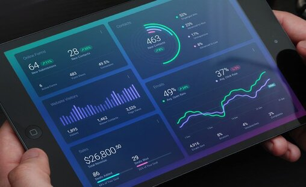

Process mapping samples including BPMN swimlanes and workflow diagrams.
Focused on documenting end-to-end service flows, roles/hand-offs, decision points and exceptions for SOP standardization and automation readiness.

Portfolio of work and repositories related to process documentation, SOP/BRD drafting, and workflow improvement.
My approach applies Lean methods (SIPOC, CTQ, RCA, Kaizen) to reduce turnaround time, rework, and escalation loops.

Executive-level sales performance dashboard built using the AdventureWorks sample dataset.
Provides leadership visibility into sales trends, top products, customer contribution,
return rates, and geographic performance.
Excel-based cleaning, analysis and visualization demonstrating reporting and dashboarding fundamentals.

Tableau dashboard showcasing analytical storytelling and visualization skills.
SQL data transformation and cleaning—supporting analytics and operational reporting needs.
SQL exploration project demonstrating querying and analytical problem solving.